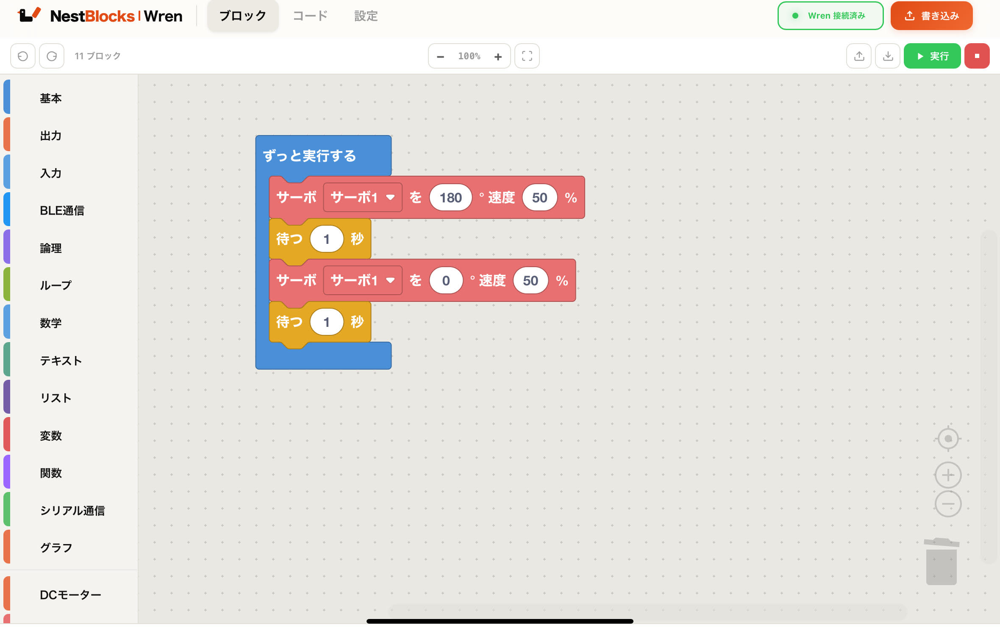

つくる世界。この中に。
プログラミング環境を、Pico Wにまるごと。
初回設定のあとは、Wi-Fiにつないでブラウザを開くだけ。
インターネットすら、いりません。
Features
ビジュアルプログラミング
ブロックを組み合わせるだけで MicroPython コードが自動生成。はじめての人でも直感的に動かせます。
Wi-Fi でどこでも
Pico W が作る Wi-Fi アクセスポイントに接続するだけ。Wifiのない環境でもタブレットのブラウザからそのまま使えます。
ワンクリック書き込み
完成したプログラムを Pico W へ即転送。RUN ピンを HIGH にするだけで次回起動時に自動実行されます。
リアルタイムコンソール
実行中の出力をブラウザでリアルタイムに確認。センサー値のデバッグやエラーの確認がすぐできます。
How to Use
初回だけ、PC から Pico W へのインストールが必要です。設定済みの Pico W は、次の手順で起動できます。
STEP 01
Pico W の電源を入れる
設定済みの Pico W に USB などで電源を供給し、起動を待ちます。編集画面を開くときは、RUNモードに対応しているピン(GPIO22)の接続を解除してください。
STEP 02
Wren の Wi-Fi に接続する
使う端末の「設定」から Wi-Fi を開き、初期設定で決めた名前（例：Wren-01）を選び、パスワードを入力します。「インターネット接続なし」と表示されても、そのまま接続を維持してください。
STEP 03
ブラウザで Wren を開く
Safari・Chrome・Edge などを開き、画面上部のアドレス欄に http://192.168.4.1/ と入力します。下の QR コードからも開けます。編集画面と「Wren 接続済み」が表示されたら準備完了です。
先に、開きたい端末を Wren の Wi-Fi につないでください。この QR コードは Wi-Fi の設定用ではなく、編集画面を開くためのものです。
http://192.168.4.1/このページを見ている端末で使う場合は、上のリンクをタップしてください。Wi-Fi に接続しただけでは、ブラウザは自動で開きません。
iPad：Safari で Wren を開き、「共有」→「ホーム画面に追加」→「追加」。オレンジ色の鳥のアイコンが目印です。Apple の操作案内
Windows・Mac・Chromebook・Android：ブラウザのブックマークに登録しておくと便利です。次回も先に Wren の Wi-Fi に接続してから、アイコンやブックマークで開いてください。
Pico W に電源が入っているか、選んだ Wi-Fi が初期設定時の名前と一致しているか確認してください。RUN スイッチがある場合は EDIT 側にして、電源を入れ直します。
ブラウザのアドレスが http://192.168.4.1/ になっているか確認してください。「https」や検索欄への入力では開けない場合があります。Wren の Wi-Fi に接続し直してからページを再読み込みしてください。

Setup
Raspberry Pi Pico W、データ通信に対応した USB ケーブル、Chrome または Edge が使える PC を用意してください。このページの USB 書き込みは PC で行います。インストール後は iPad などの端末から Wi-Fi 経由で使えます。
学校などで設定済みの Pico W を受け取った方は、再インストールせず起動方法へ進んでください。
これは新品のPicoWを購入した場合に必要な作業です。すでにMicroPythonが使える状態のPicoWがある場合にはこの作業は必要ありません。
MicroPython がインストール済みの場合、この作業は不要です。以降の USB 接続では BOOTSEL を押さずに接続してください。
Pico W が発信する Wi-Fi の名前とパスワードを決めます。自宅や学校の Wi-Fi の情報を入力する欄ではありません。複数台で使う場合は Wren-01、Wren-02 のように名前を分け、接続する人に名前とパスワードを伝えてください。
MicroPython を入れた Pico W を、データ通信対応の USB ケーブルで PC に接続します。このページを Chrome または Edge で開き、下の「USB を接続する」を押してください。選択画面で Pico W のシリアルポートを選び、接続を許可します。候補が出ない場合はケーブルを確認し、Thonny など同じポートを使うアプリを閉じてください。
「書き込みを開始する」を押し、「インストール完了」と表示されるまで、ページを閉じずに待ってください。途中で USB を抜かないでください。完了後に USB を抜き差しして電源を入れ直し、起動方法に沿って使う端末を Wren の Wi-Fi に接続します。
NestBlocks Wren がすべて書き込まれました。
USB を抜いて電源を入れ直すと起動します。
Licenses
NestBlocks Wren
Copyright © 2026 Mimir
All Rights Reserved本ソフトウェアのオリジナルコード（firmware/・src/ 等）は著作権者が全権利を保有します。書面による許可なく複製・改変・再配布を禁じます。
Blockly
Copyright © Google LLC
Apache License 2.0本製品は Google LLC が開発した Blockly を含みます。Apache License 2.0 に基づき使用しています。原著作権表示および同ライセンス文を保持します。
履歴はこのブラウザに保存されます。別の端末・ブラウザや、履歴を消去した場合は引き継がれません。